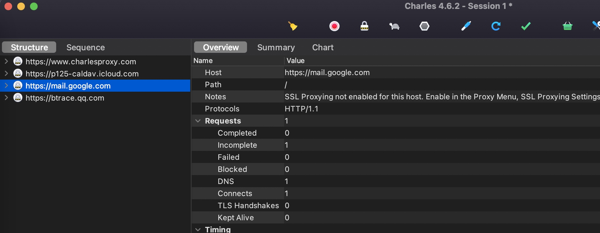
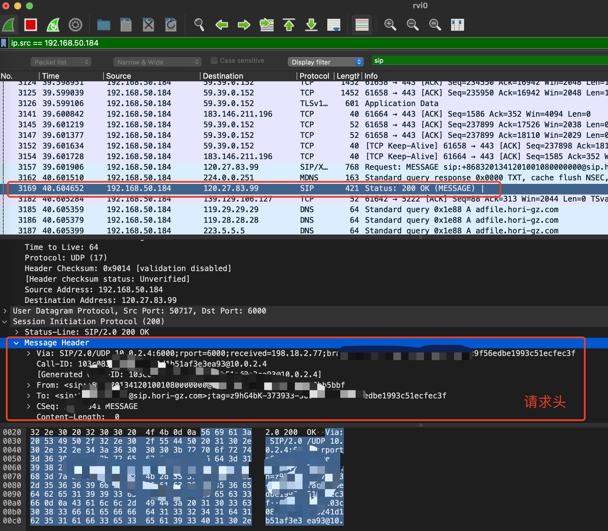

攻破小区门禁系统
大家好，久违了，好久没写公众号文章了。今天有些时间，翻了翻文档库，发现之前一个写了一半的文章。今天写一写和大家分享下~
很多小区的大门和楼栋门都可以通过 NFC 实体卡片或者手机 APP 的方式打开，我所在的小区也不例外。
开门是一个每天都会发生好多次的操作，我们会频繁进出小区，外卖快递等等经常打电话让开楼栋门。所以寻求一个最便捷的方式很有必要。
首先我从不用 NFC 实体卡，这玩意和带个钥匙没啥区别，到门口了我还得翻出实体卡，还容易丢。非常不方便。
通过手机 APP 开锁倒是挺方便，你总不会不带手机吧。
但是通过 APP 开锁也有个很大的痛点 - 广告。没错，一般这种开锁 APP 都是些小公司开发的，体验贼差，广告贼多，流程贼长。
我这里录个视频，大家可以感受下。。。
这是一个 12 秒的视频，也就意味着每次开门都需要十几秒的时间，这简直太慢了。
接下来，我要开始破解了！
首先从技术的角度去看，我们打开 APP 开锁，其实就是发了一个网络请求，可能还会涉及登录等操作。
那么我们如果在手机上开锁，然后对开锁的请求进行抓包，将具体参数记录下来，下次开锁时只需要做一次重放操作就可以了。
原理很简单，说干就干。
我平时抓包用 Charles，这个工具简单易用，可以很方便的抓 HTTP 和 HTTPS 的请求。安装、设置代理、操作、抓包，一气呵成。结果我发现手机开锁后，Charles 上并没有看到任何相关的请求记录。

奇了个怪，没有任何网络请求，难道是通过 NFC 或蓝牙实现的？也不对呀，因为可以远程开锁，所以肯定是通过网络开锁的。
经过了解，这玩意发的网络请求竟然不是 HTTP 协议，而是 SIP 协议。至于 SIP 是啥，就是一种实现 VoIP 的协议，简单理解就是实现语音通话的。因为 Charles 只能抓 HTTP 协议，所以得换个工具。
Wireshark 是另外一款抓包工具，可以抓所有协议的请求。说干就干。监听手机之后，操作开锁，立刻就看到了相关的请求。

上图是开锁的关键请求，我们可以清晰的看到所有需要的信息，然后在手机端重放一下这个 SIP 请求即可。
基于此，搞了个 iOS APP，后面开锁只需要打开 APP，然后点一下想开的门即可。
嗯，至于这个 APP 的 UI，确实丑。。但是不影响开锁速度，就懒得优化了。。
经过这一波操作，开锁又原来的十几秒缩短为现在的三四秒，每天可以省出一分钟的时间给你的女神多聊几句天。
最后，你们小区的开锁方式是啥样的呀？评论区告诉我~
有能力的可以考虑破解一下，方便自己。但是注意不要分享给很多人用，尊重开发者的劳动成果吧，也避免给自己招来不必要的麻烦。
转载请注明出处：攻破小区门禁系统 - 专业点
欢迎关注我的公众号

推荐

公众号推荐
欢迎关注我的公众号一起愉快的交流。